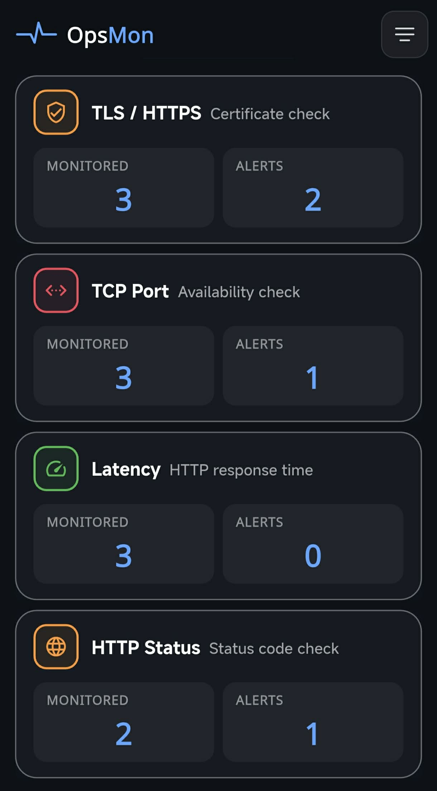
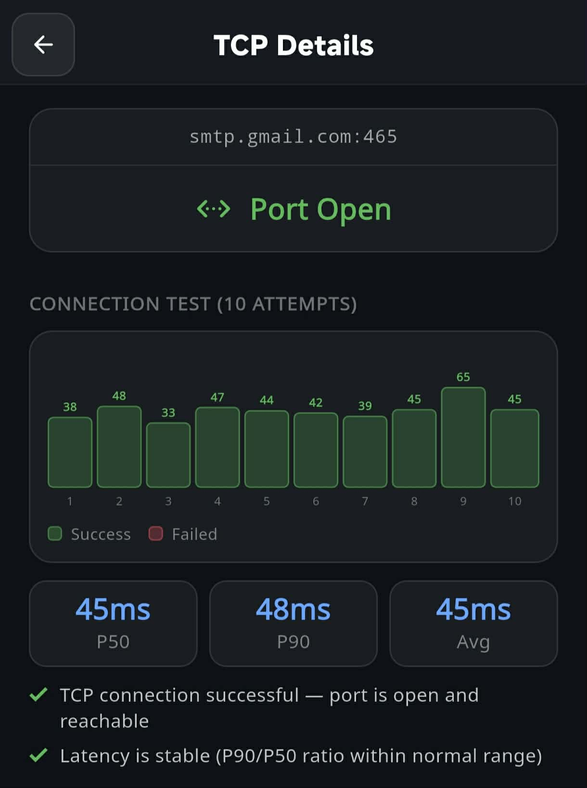
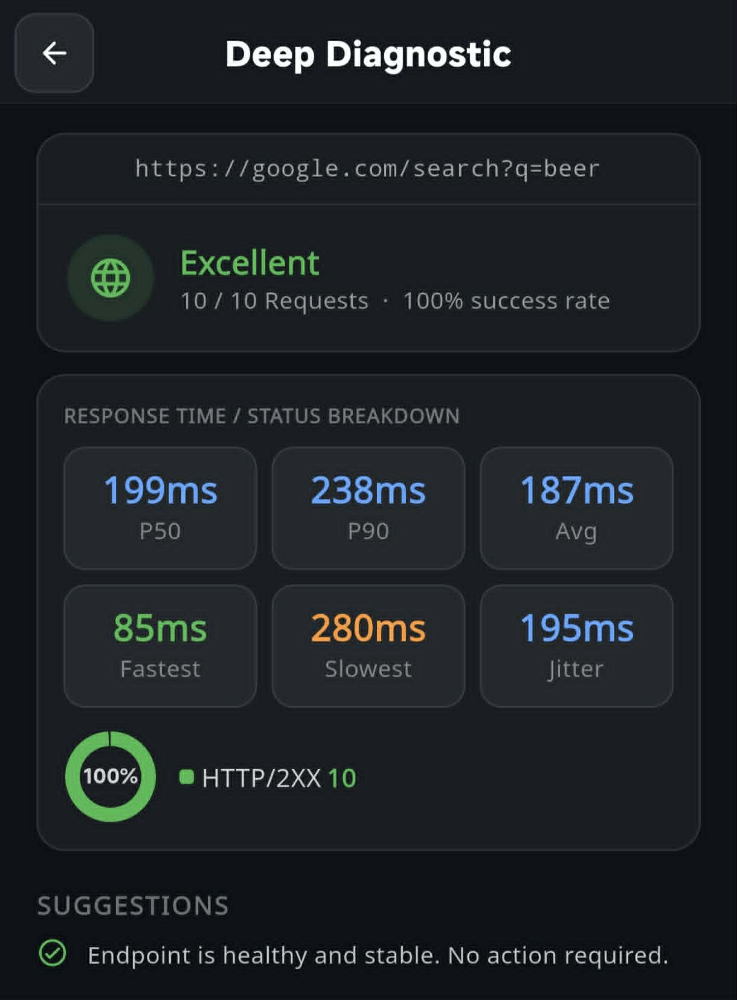
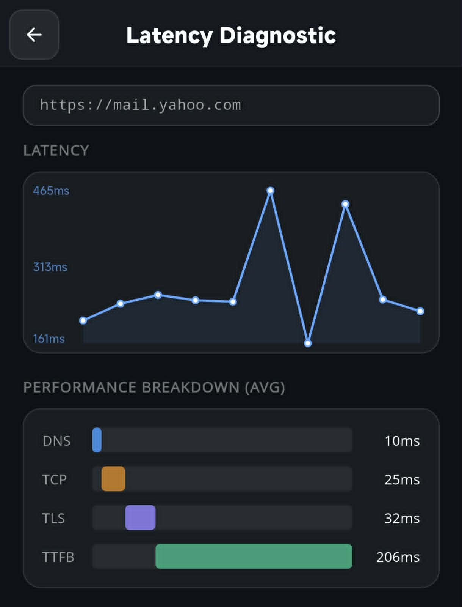
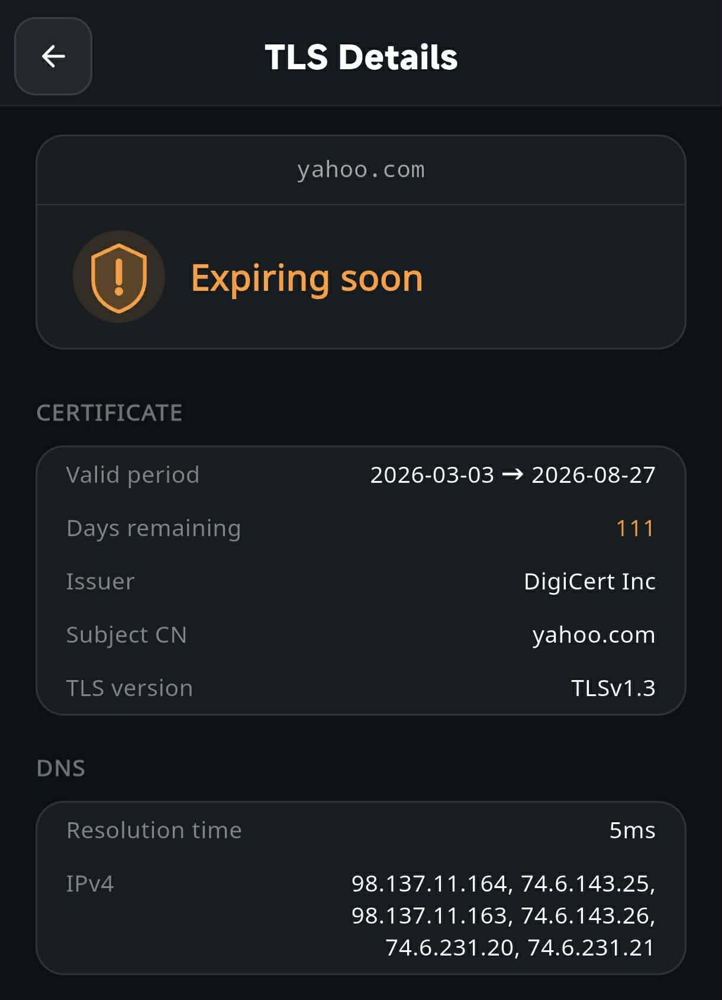

Explore how to set up professional, local-first monitoring scenarios for mail servers, custom APIs, network latency, and SSL security.

Our main dashboard categorizes monitors into TLS, TCP, Latency, and HTTP Status. Easily track your monitoing scope and see the exact number of active alerts without searching through endless logs.
Mail services rely heavily on specific network ports. If a firewall rule changes or the server crashes, mail flow ceases immediately.

Using Gmail's SMTP server (smtp.gmail.com:465) as an example, OpsMon directly runs connection tests to verify port availability. You'll get clear confirmation when the port is "Open and reachable".
smtp.gmail.com / Port 465 (SMTP) or 993 (IMAP).
Ensure your critical web applications and backend APIs are serving requests properly with HTTP status code monitoring.

OpsMon supports customized HTTP GET endpoints (e.g. testing queries). You can monitor request success rates, track average response times, and verify if the host persistently returns healthy HTTP 2XX responses.
When essential web portals, like corporate Webmail, run slow, users experience immediate productivity blockages.

Using https://mail.yahoo.com as an example, OpsMon visualizes latency spikes and neatly dissects response times into DNS resolution, TCP handshake, TLS negotiation, and TTFB (Time to First Byte) so you can pinpoint the exact cause of slowness.
Avoid the ultimate website trust killer: unexpected SSL/TLS certificate expirations that trigger intimidating browser warnings.

By monitoring core domains like yahoo.com, OpsMon displays clear, color-coded warnings (such as orange "Expiring soon" with exact remaining days) giving you ample buffer time to renew certificates before they disrupt traffic.